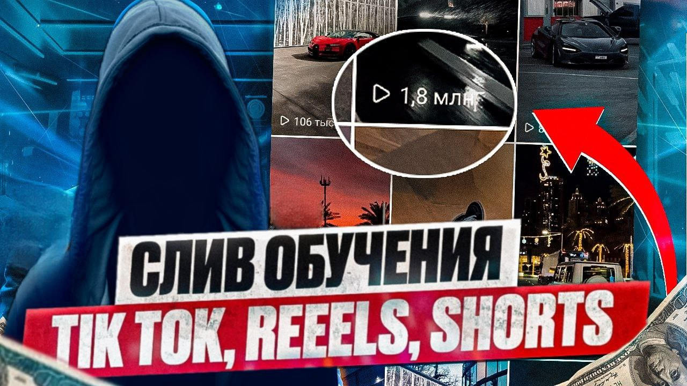
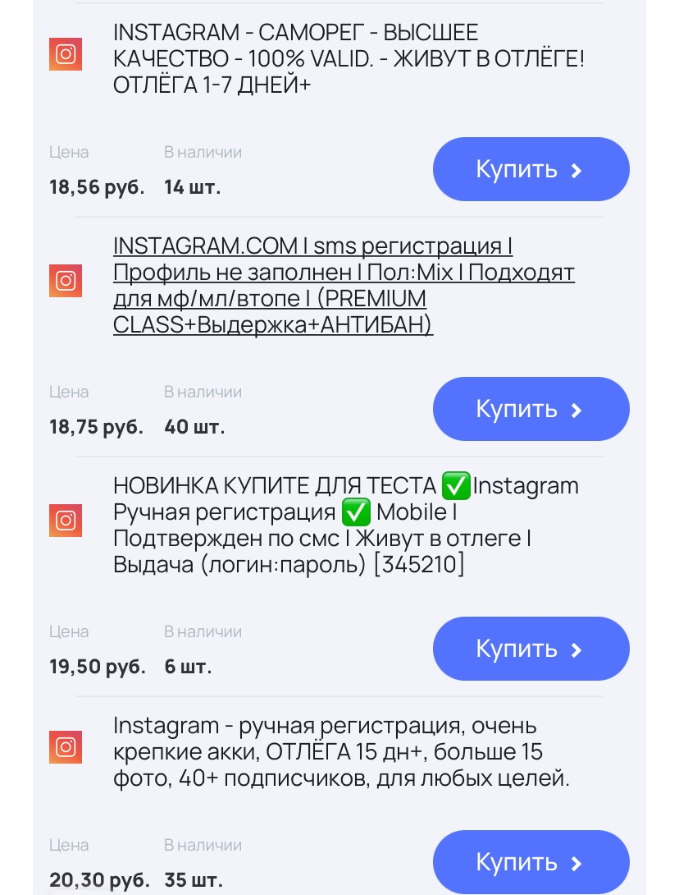
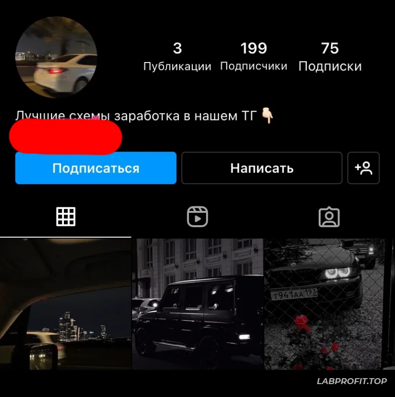

CLEAN CASH
Instagram Reels - еще один крутейший условно-бесплатный источник трафика, который дает самые стабильные просмотры на видео, хоть и не большие как в TikTok, однако повторюсь стабильные! Что очень круто для новичков, которые не хотят гнаться за рекомендациями, а постепенно и уверенно развивать свой Телеграм канал.
День 1-3 Аккаунты
Для нормальной работы необходимо иметь 20-30 аккаунтов, чтобы привлекать 100-150 человек в день. Это средние цифры, если брать промежуток более чем в 1 месяц. Первый вариант, где их можно взять- это создать. Но за один раз можно сделать не больше 2-3 аккаунтов, дальше Инстаграм будет упорно блокировать каждый новосозданный акк или вообще начнёт выдавать ошибку. Поэтому можно зарегистрировать несколько аккаунтов самостоятельно, но проще их купить. Покупаем аккаунты мы на любом из сервисов, я использую сервис darkstore.pro Ссылка на него: https://darkstore.su/ Обязательно берём хорошие аккаунты, с отлежкой 1-2 недели. Желательно чтобы они были полностью пустые, чтобы не удалять всю информацию с акка и не получить бан за подозрительную активность. Стоят такие 15-20 рублей за штуку.
После того, как купили аккаунты, вручную заходим в каждый из них через телефон и проверяем их на валидность. Можно проверить и через софт, но по моим наблюдениям, лучше сразу заходить через телефон вручную и смотреть, тогда ролики будут набирать больше просмотров. После того как купили аккаунты и проверили их, даём отлежаться им 2-3 дня. Абсолютно не трогаем их. После этого переходим к прогреву.
Задание на 1-3 день:
1.Купить и создать 20-30 аккаунтов 2.Зайти на каждый из них, проверить их на валидность 3.Скинуть отчет о задании(скрин, где будет видно все полученные аккаунты) 4.Дать отлежаться аккаунтам 2-3 дня
День 3-4 Прогрев аккаунтов
После того, как купили аккаунты, дали отлежаться им 2-3 дня, заходим на каждый из них и начинаем оформлять. Первое что делаем- это меняем Ник на аккаунте, а также ставим аватарку. Аватарку ставим любую, но желательно ставить ту, которая подходит под тематику самого акка. Когда сделали данные манипуляции, заходим в Pinterest и начинаем искать красивые фотки с тачками. На каждый аккаунт нам нужно по 2-3 фотки. Когда нашли нужное количество, снова заходим на каждый аккаунт выкладываем по 2-3 фотки. После того, как сделали это, даём аккаунту отлежаться ещё один день, также можно залить на каждый акк парочку сторис. Делаем все, чтобы инста думала, что мы обычный человек, который ведет свой инст.
Задание на 3-4 день:
- Зайти на каждый аккааунт, изменить его название на нормальное, поставить аватарку
- Зайти в пинтерест, для каждого аккаунта найти по 2 фотки
- Выложить данные фотки на каждый аккаунт, по 2 фотки
- Залить по одной любой сторис на каждый аккаунт
День 5
После того, как дали отлежаться аккаунтам ещё 1 день, необходимо накрутить на каждый по 100-150 подписчиков. Сервис накрутки используем любой. После того, как накрутили, аккуратно подписываемся на 30-70 рандомных человек. Главное не словить бан за это. Стараемся подписываться с интервалом в 2-3 секунды. Когда сделали данные манипуляции, даём аккаунту отдохнуть ещё хотя бы полдня. Перед началом работы аккаунт должен выглядеть так:
Задание на 5 день:
- Накрутить на каждый аккаунт по 100-150 подписчиков
- Подписаться на 30-70 рандомных людей
- Оформить описание канала, вставить ссылку на канал(сделать описание идентичное описанию на скрине)
Как можно понять, ролики максимально простые, при этом они стабильно набирают 3-10к просмотров, что очень неплохо для рилсов. Рилсы, в отличии от тиктока дают стабильные просмотры, тут очень тяжело получить на ролике больше 100к просмотров, лично у меня такого не было ни разу. Для того, чтобы сделать такой ролик первым делом необходимо скачать одно из двух приложений: либо Inshot, либо CapCut. При создании таких роликов потребуются минимальные знания данных программ, которые освоить можно за полчаса, для этого достаточно посмотреть любой гайд на ютубе. После того, как скачали одно из приложений, переходим в Инсту и начинаем искать исходники для роликов. В основном я за основу беру видео с тачками. На один ролик нам нужно 2 видоса. Ищем мы их по хештегам связанным с тачками (#cars #bmw #bmwm #e63 #drift и тд). Когда нашли подходящие видео ( можно посмотреть на примеры роликов выше и понять, что необходимо искать), переходим с созданию ролика.
Он состоит из 3 частей:
- Введение
- Основная часть
- Заключение. В заключении мы просим перейти на наш ТГ канал
Как я уже писал выше, если сливать на тг каналы по заработку, смело можно использовать видео примеры, которые я указал выше и делать по аналогии. При сливе на другие тематики, нужно самому экспериментировать и искать оптимальный креатив. После того, как выложили ролик, ждём несколько часов, если он не набрал просмотров или набрал 1-10 просмотра, удаляем его, и даём отлежаться аккаунту ещё один день. В 80% случаев следующий ролик залетит хорошо. Однако бывают аккаунты, на которых изначально плохо крутятся видосы, такие нужно или дольше прогревать, делать больше постов, либо забрасывать их и покупать новые. В основном таких акков немного.